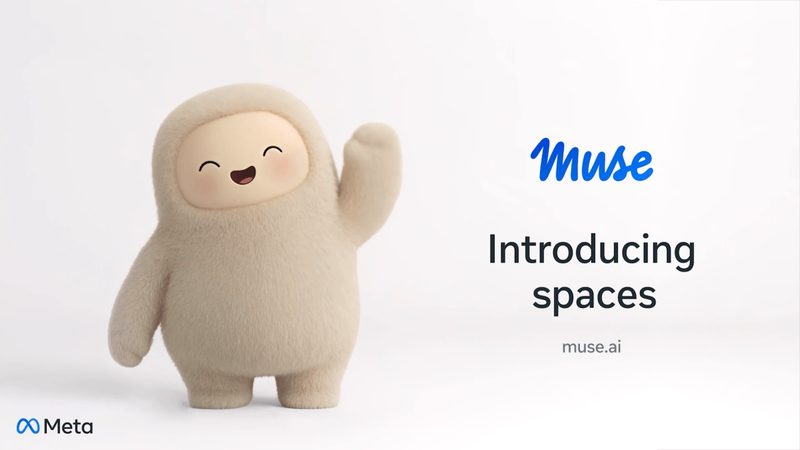
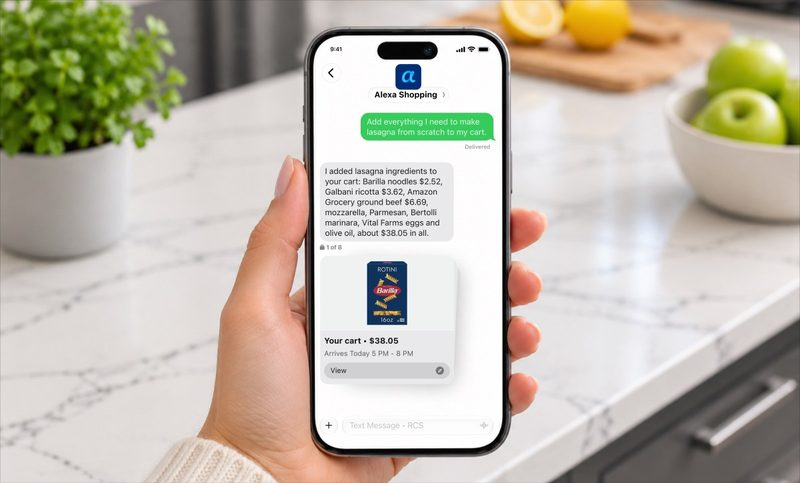
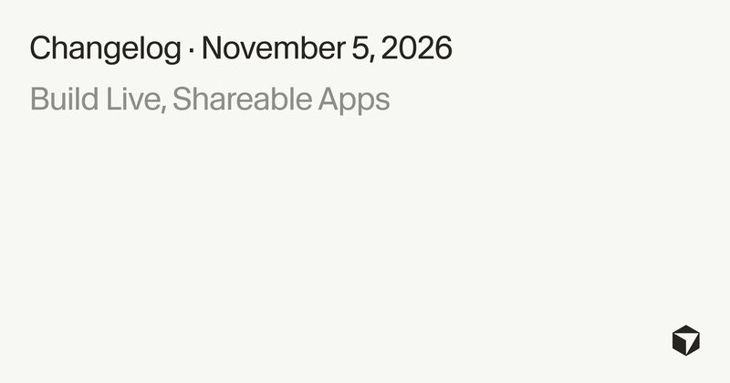
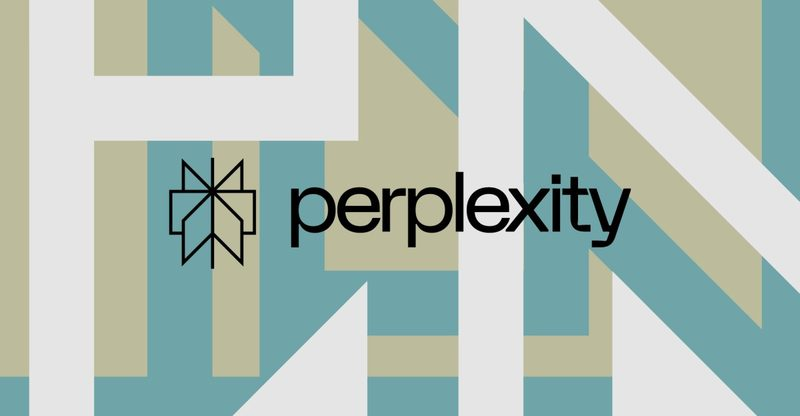
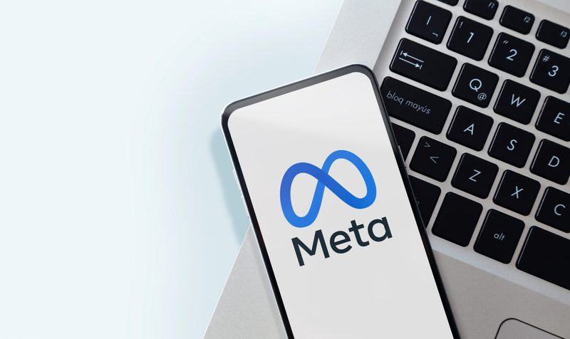
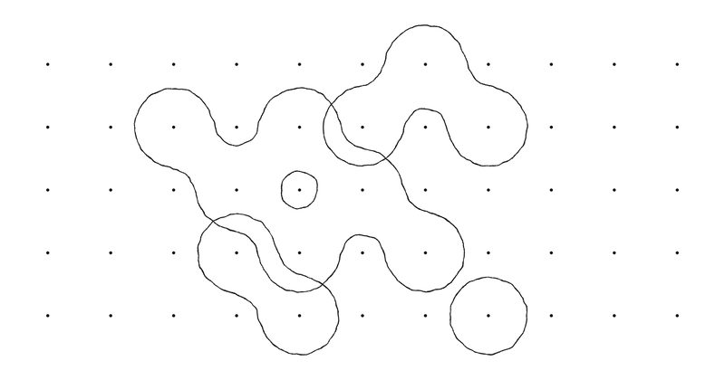
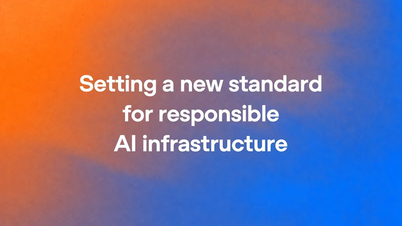

今日頭條
Muse 推出自訂 Spaces 小工具
PLUS：Amazon 可用簡訊請 Alexa 購物
本期重點：Meta 讓 Muse 依描述做出禮品追蹤、行程板這類自訂 Spaces；Amazon 開放用簡訊跟 Alexa 購物。另有 Cursor 一鍵把 App 上線、Perplexity 工作代理 Teammates、32MB 離線語音模型 Woof、Meta 暫緩抓站訓練條款、Thinking Machines 新模型 Inkling 2 Small，以及 OpenAI 對資料中心社區的新承諾。

圖：Meta新上線#1Muse 推出 Spaces：用一句話做出禮品追蹤、行程板等小工具
Meta 11 月 6 日宣布 Muse App 新增 Spaces。用戶用口語描述想法，例如過年送禮追蹤、學校行事曆看板或婚禮規劃，Muse 會做成可互動的自訂體驗，可放側邊欄或主分頁，也能排程在平日與週末切換顯示。連接 Gmail、日曆等 App 後，票價、檔期、儲蓄進度等資料會在背景自動更新。
💡 跟你有什麼關係：很多半成品想法本來散落在備忘錄與試算表，現在可以直接在 Muse 裡做成能勾選、能改的小工具，通勤或帶小孩時比較好接續處理。
⚠️ Spaces 在 Muse 已開放的地區同步推出；分享給其他人仍在規劃中。此前 Muse 語音功能只在美國等部分地區可用，Spaces 實際可用性依各地 Muse 開放進度而定。
📰 原始來源：Meta Newsroom（2026-11-06） ↗
圖：Amazon（經 TechCrunch）新上線#2Amazon 開放用簡訊請 Alexa 幫忙購物
Amazon 11 月 6 日宣布，部分美國用戶可簡訊聯繫「Alexa Shopping」，用自然語句搜尋商品、加購物車、下單、追蹤包裹，也能傳照片找相似款，或請它監看目標價再通知。官方表示過去一年逾 4 億人用過 Alexa for Shopping，代理功能使用人數自年初起成長逾 8 倍。
💡 跟你有什麼關係：想到缺狗糧、要買生日禮物時，不用特地打開購物 App，在既有訊息列表回一句就能先處理；也適合一手忙著做家事時順便下單。
⚠️ 先以邀請制在美國小範圍上線，之後數週逐步擴大；未收到邀請可上官方頁面登記。實際能否代下單、付款方式仍依帳號與地區設定。
📰 原始來源：Amazon 官方（2026-11-06） ↗
圖：Cursor新上線#3Cursor 推出 Build Live Apps，做好就能直接上線分享
Cursor 11 月 5 日在更新日誌宣布 Build Live Apps：用雲端代理描述要做的工具後，系統可建置網頁 App、必要時架 Postgres 資料庫、設定 Cursor SSO 登入並部署，發布時自選網域取得可分享連結。官方舉例包含活動報名、座位表、新人訓練與業務儀表板等內部工具。
💡 跟你有什麼關係：業務、人資或營運若只想做一個給同事用的小工具，不必再另找工程師部署；通過安全檢查並手動發布後，就能用連結分享。
⚠️ 僅付費方案且已啟用雲端代理可用。發布前會跑安全檢查，有問題須修好並由使用者明確同意才能上線；團隊管理員可查看、下架應用與管理密鑰。
📰 原始來源：Cursor 官方（2026-11-05） ↗
圖：The Verge新上線#4Perplexity 推出工作代理 Teammates，可同時扛多項任務
Perplexity 11 月 5 日推出面向工作的常駐代理 Teammates，可在工作區分擔行銷、客服、營運或寫程式等角色，沿用既有專案、技能與記憶，並同時執行多項工作。官方說它建在 Perplexity Computer 之上，強調處理持續進行的大型工作；進度可在 App 獨立對話串或 Slack 查看。
💡 跟你有什麼關係：若已在用 Perplexity 做研究與文件，之後可把重複性較高的追蹤、彙整工作交給常駐代理，自己只審核關鍵決策。
⚠️ 目前屬研究預覽，需訂閱每月 200 美元的 Max 方案，價格明顯高於一般消費者方案。執行結果仍須人工核對。
📰 原始來源：The Verge（2026-11-05） ↗圖：Underdog（經 TechCrunch）工具#5Underdog 釋出僅 32MB 的語音模型 Woof，瀏覽器離線就能講
新創 Underdog 11 月 5 日公開文字轉語音模型 Woof，體積約 31.7MB、約 3,100 萬參數，可在瀏覽器本機執行、不必連網。公司用它做了一款復古風格小遊戲示範打字與轉語音；權重開放下載。創辦人表示希望做出美國製、開放且可在自有裝置上跑的私人 AI。
💡 跟你有什麼關係：若在意語音備註或朗讀資料不要上傳雲端，這類超小模型展示了「在自己手機或筆電上講」的可能，之後做個人助理或離線朗讀會更實際。
⚠️ 小模型音質與表現力不及大型雲端語音；授權與是否可商用請以官方授權條款為準。此為二手報導（TechCrunch），示範遊戲於 11 月 5 日公開。
📰 原始來源：TechCrunch（2026-11-06） ↗
圖：Nieman Lab／Adobe Stock政策#6Meta 無限期暫緩商業條款更新，不強制用粉絲頁抓站訓練 AI
Nieman Lab 11 月 5 日報導，Meta 已暫停更新商業條款、產品目錄條款與廣告生成式 AI 條款，原定 11 月 20 日生效的版本不會上路，既有條款繼續適用。爭議點在於新條款可能要求商業帳號允許 Meta 大量抓取粉絲頁外連網站內容做 AI 相關用途；挪威、巴西法院已發出初步禁制令，英國競爭主管機關也在調查。
💡 跟你有什麼關係：經營粉專的店家、媒體或社團，暫時不必為了留在 Facebook／Instagram 而默許整站被抓去訓練；之後若條款再改，仍應仔細看授權範圍。
⚠️ Meta 表示是暫停並持續與利害關係人討論，不是永久撤回。本則依 Nieman Lab 與 Meta 官方說明整理。
📰 原始來源：Nieman Lab（2026-11-05） ↗
圖：Thinking Machines Lab新聞#7前 OpenAI CTO 新創推出 Inkling 2 Small，594B 參數開源權重即將釋出
Thinking Machines Lab 11 月 5 日發表第二代模型 Inkling 2 Small：混合專家架構總參數 5940 億、每次約啟用 170 億，支援文字與圖片、上下文最長約 100 萬 tokens。Artificial Analysis 指數得分 31，較上一代明顯提升。目前可在 Tinker 平台試用與微調，權重暫不公開，官方計畫完成外部安全測試後於隔週以 Apache 2.0 釋出。
💡 跟你有什麼關係：若之後權重真的開放，開發者與研究單位多一個可自架、可改的高能力模型選項，不必只依賴閉源聊天服務。
⚠️ 數字為官方與第三方榜單自評；權重釋出時程以官方後續公告為準。一般消費者尚無法像 ChatGPT 那樣直接當聊天 App 使用。
📰 原始來源：Thinking Machines Lab 官方（2026-11-05） ↗
圖：OpenAI政策#8OpenAI 公布社區承諾：自付電費、不用保密協議綁地方官員
OpenAI 11 月 5 日公布《國家社區公約》與運算園區政策藍圖，承諾未來自有自營資料中心會付清用電與配套基礎設施費用、公布用水與電力數據、施工前公開噪音研究，並原則上不與地方公職簽署保密協議。藍圖也建議監管機關要求大型用電戶自行負擔新增電網成本，並公開租稅優惠條件。
💡 跟你有什麼關係：各地對資料中心搶電、噪音與水源的反彈升高後，這類承諾影響社區能不能監督建廠條件；若你住家附近有 AI 機房計畫，可對照這些項目追問開發商。
⚠️ 適用於 OpenAI 未來自有自營園區；合作方或租用機房不一定自動適用。政策藍圖是建議，能否立法仍看各地政府。
📰 原始來源：OpenAI 官方（2026-11-05） ↗✅ 2026/11/7（六） 可以做：想試 Muse Spaces，可以先從一個具體需求開始，例如「週末旅行行程板」或「過年送禮追蹤表」，描述清楚後再請它微調欄位與版面。
🗂️ 過去 14 天